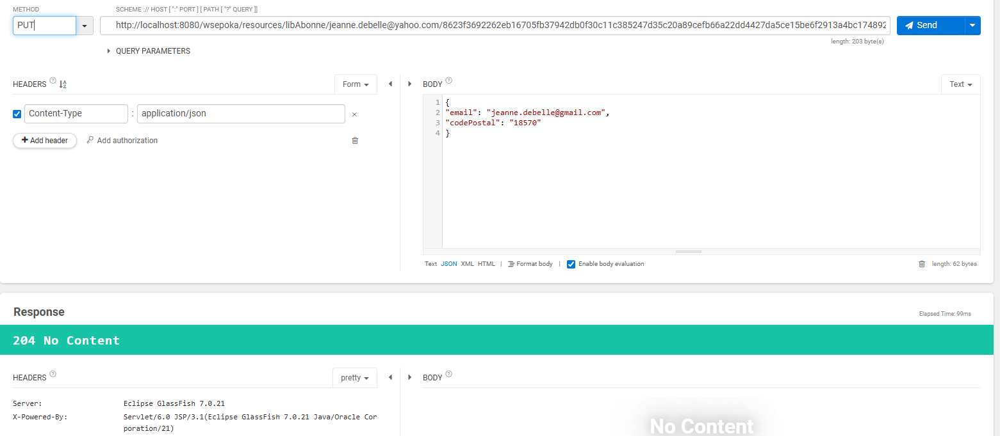

Mise en place du service web type RESTED


Nous avons utilisé json et gson pour visualiser les abonnements d'un abonnée en "GET" et les modifier en "PUT".

Nous avons utilisé json et gson pour visualiser les abonnements d'un abonnée en "GET" et les modifier en "PUT".